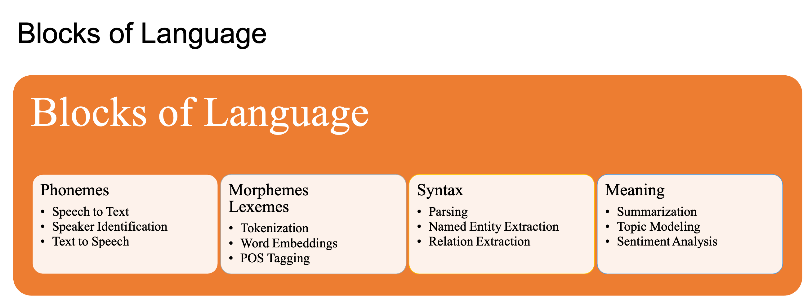

Natural Language Processing: A Primer¶
Computational Linguistics is a very active subject in linguistics.
Natural Language Processing (NLP): It is a sub-field of computer science that deals with methods to analyze, model, and understand human language.
NLP Applications¶

NLP Tasks and Language Blocks¶

NLP Challenges¶
Ambiguity
Creativity
Diversity
Common Knowledge (Context)
Artificial Intelligence, Machine Learning, Deep Learning and NLP¶
Artificial Intelligence is a branch of computer sceience that aims to build systems that can perform taskes that require human intelligence.
Machine Learning is a branch of AI that deals with the development of algorithms that can learn to perform tasks automatically based on large number of examples, without requiring handcrafted rules.
Deep Learning is a branch of machine learning that is based on the artificial neural network architectures.
Approaches to NLP
Heuristics-based NLP
Machine Learning NLP
Deep Learning for NLP
Heuristics-based NLP¶
Examples:
Dictionary-based sentiment analysis
WordNet for lexical relations
Common sense world knowledge (Open Mind Common Sense, Ontoloty)
Regular Expressions
Context-free grammar
Strengths:
Rules based on domain-specific knowledge can efficiently reduce the mistakes that are sometimes very expensive.
Machine Learning for NLP¶
Types of machine learning:
Supervised vs. Unsupervised
Classification vs. Regression
Three common steps for machine learning
extracting features from texts
using the feature representation to learn a model
evaluating and improving the model
Common methods:
Naive Bayes
Support Vector Machine
Hidden Markov Model
Conditional Random Field
Deep Learning for NLP¶
Sequence Models
Recurrent Neural Network (RNN)
Long-Term Short-Term Memory (LSTM)
Convolutional Neural Network (CNN)
Transformers
The state-of-the-art model in major NLP tasks
It models the textual context in a non-sequential mannwer.
Given a word in the input, the model looks at all the words around it and represent each word with respect to its context. This is referred to as self-attention.
Transfer Learning
It is a technique in AI where the knowledge gained while solving one problem is applied to a different but related problem.
We can use unsupervised methods to train a transformer-based model for predicting a part of a sentence given the rest of the content.
This model can encode high-level nuances of the language, which can be applied to other relevant downstream tasks.
Deep Learning is NOT Everything¶
The trend now is to leverage large transformer models and huge datasets for generic NLP tasks like language models, and then adapt these pre-trained models to smaller downstream tasks.
Challenges
Overfitting on small datasets
Occam’s razor
Data accessibility
Domain adaptation
Interpretable models
Cost
Data guzzler
Specialized hardware (GPUs)
Deployment and maintenance
On-device deployment
Conclusion¶
Deep learning is not always the go-to solution for all industrial NLP applications.
Many deep learning models are not interpretable enough to indicate the sources of empirical gains.